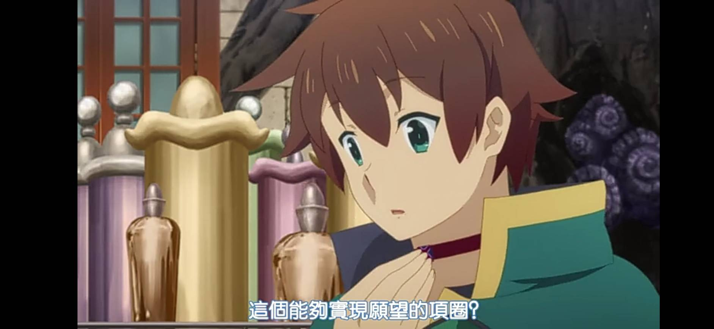
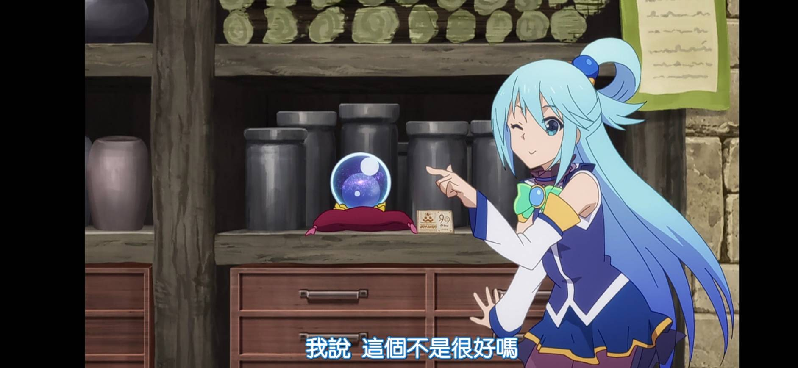
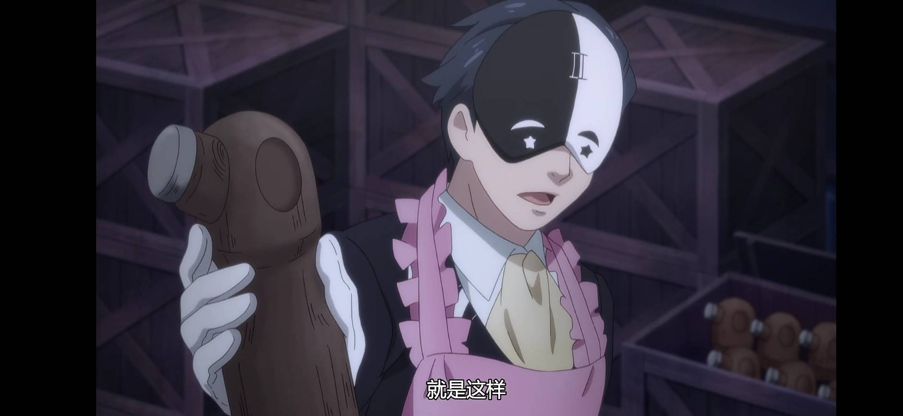
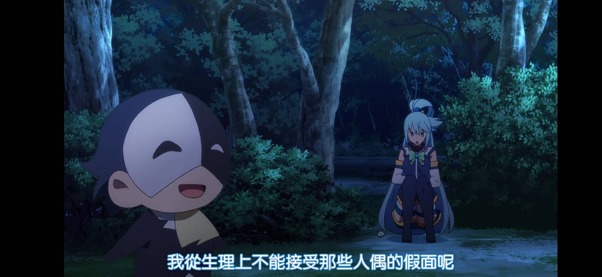
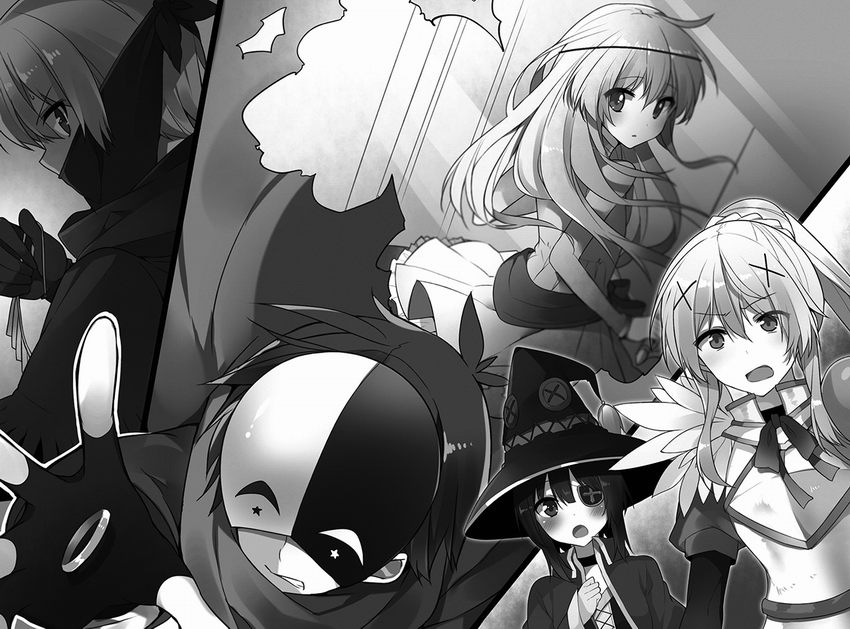
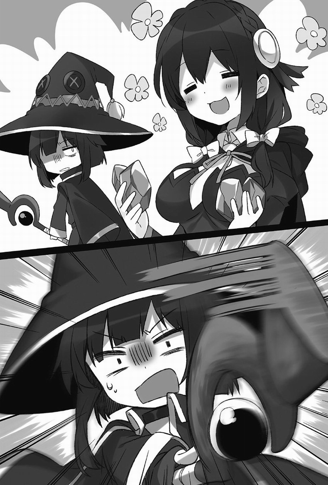

維茲魔道具店的商品
能實現願望的項圈（願いがかなうチョーカー）
動畫原創(動畫第1季第11話)，標簽著能實現願望，實為一旦戴上在實現願望之前也不能脫下、並會隨時間流逝不斷縮緊的項圈。
能成為朋友的水晶球（仲良くなる水晶）
動畫原創(動畫第2季第2話)，只要灌輸魔力就能看見灌輸魔力者過去的水晶球，但只能看見灌輸魔力者羞恥的過去，藉由暴露羞恥的過去讓彼此理解而成為朋友。最後被惠惠毀掉並要芸芸賠償。
盜賊裝飾
只要帶在身上誰都能使用(盜取)的能力，但需要消耗大量魔力也只有盜賊職業才能用。
以魔法壓縮的簡易廁所
只要打開箱子即可立刻組裝完成，配備的是沖水馬桶，甚至具有能夠在使用時保護隱私的音效。缺點是，掩蓋如廁聲的音效太大，容易引來怪物。同時製造水的裝置也太過強大，附近會嚴重淹水。
只要打開就會爆炸的魔藥
一瓶只要三萬艾莉絲，拿著這種魔藥到銀行去，在行員面前揚言要打開，就可以得到一大筆錢。
青蛙殺手（カエル殺し）
看起來像是跳來跳去的發條玩具，只要放在那裏巨型蟾蜍就會去吃，然後封入了炸裂魔法的那個魔道具就會把整隻青蛙炸掉。魔道具的價格是二十萬艾莉絲，但是討伐巨型蟾蜍的報酬加上青蛙肉的收購價是一隻二萬五千艾莉絲。
麻痺效果強化藥水（麻痺の効果拡大スクロール）
可麻痺敵人，但自己也會被麻痺。
女神高湯（女神のダシ汁）
由於阿克婭出主意炒地皮，讓維茲魔道具店陷入嚴重赤字，為填補赤字，佐藤和真出主意讓阿克婭泡在水桶裡，利用阿克婭長時間觸碰水的話還可以把水變成聖水的能力，製造出對不死族怪物效果拔群的聖水後再拿出來賣。
空調（くーらー）
只要往裏面注入魔力就能讓室溫下降。但是這個魔道具製作出來之後保質期只有半年。
驅趕不死怪物的魔道具
只要打開盒蓋，就會冒出讓不死怪物不敢接近的神氣，持續時效長達半天。缺點是價格昂貴，一個就要一百萬艾莉絲，而且用完就沒了。不過功效可是十分出色，維茲打開盒子之後就再也無法從內場出來，足見其性能之高。
吸引怪物的魔藥
服用型的魔藥，飲用之後，不只怪物，就連鎮上的人、父母、同伴都會開始憎恨並攻擊自己，毫無例外。
咒縛魔法提升魔藥
咒縛魔法用的魔藥，具有提升魔法影響範圍的作用。所以，對敵人使用魔法時會讓自己也一起動彈不得。
泥沼魔法提升魔藥
泥沼魔法也同樣能夠擴大影響範圍，用了之後施術者也會溺死。
巴尼爾人偶（バニル人形）
製作時塞了巴尼爾之面具的碎片，害怕巴尼爾的惡靈就不會接近。雖然半夜會發出笑聲，但功效超群
。 量產型巴尼爾面具
這在月夜戴上這個，即可得到神秘的惡魔力量帶來的魔力提升、促進血液循環、肌膚散發光澤，以及狀態絕佳等功效。
爆炸項鏈
這是在戴上的人身負瀕死的重傷時，會燃燒該人僅剩的生命而爆炸的項鏈。據說設計概念是「希望能夠在最後一刻，賭上性命保護重要的人」的樣子。但是這個東西的威力過於強大，不只可以炸死敵人，連應該保護的重要之人也會一起被炸飛。
洩露思考的魔道具
外型是一頂帽子，是基於可以實現跟怪物和動物對話的理念開發的，甚至連靈體都可以對話。
魔晶石結晶（マナタイト）
用來提供與結晶品質相應的魔法所需的魔力的物件，不僅價格高昂而且還是一次性。
封印了強力雷擊的球
其威力足以讓兇惡的魔物昏厥，但缺點是不用雙手捧住就不會發動，而且釋放出的雷擊不是往前射出，而是只會落在正下方。
回到最上面